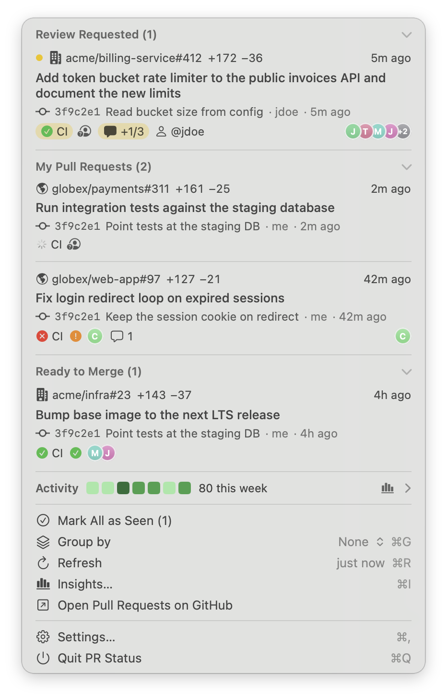
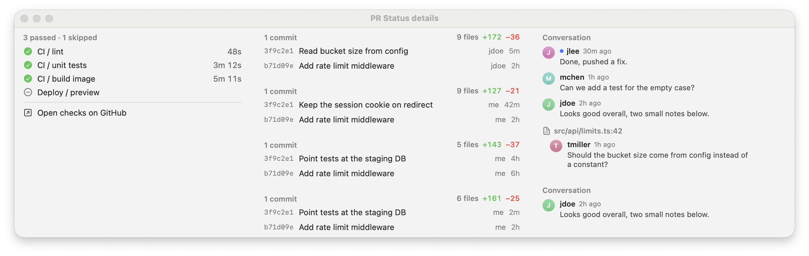
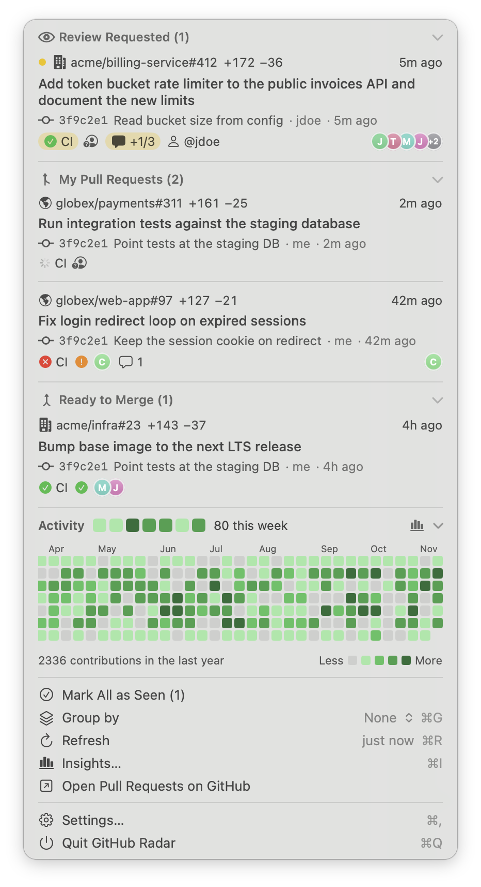
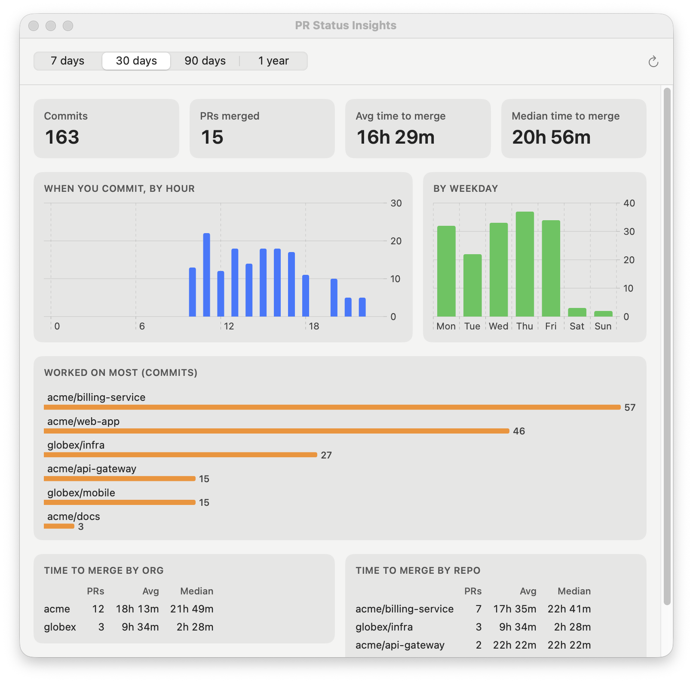
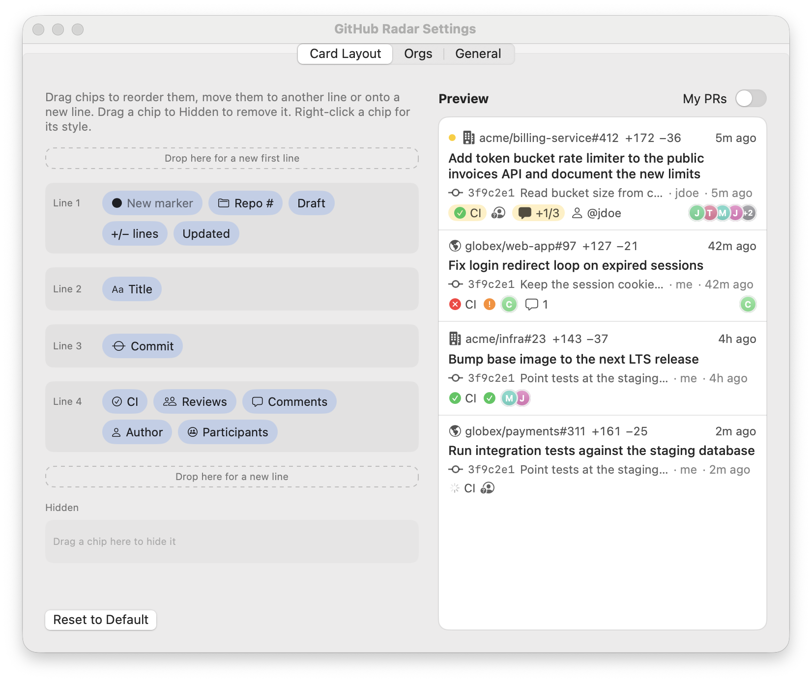

Your GitHub pull requests in the macOS menu bar
macOS 14+ · Apple silicon · free and open source (MIT)

What waits for your review, how your own PRs are doing, and what is ready to merge.
The menu bar shows to review / yours / ready to merge. The dot shows the most urgent news.
Fix needed
CI or review waiting
New comments
Approved or ready
Repo and number, title, size, latest commit, CI, reviews, comments and people. A soft yellow mark shows what is new since you last opened the PR.
CI checks with times, reviews, comment threads, commits. Every name, comment and check links to its place on GitHub.

See your last 7 days. Click to open the contribution calendar for the whole year.

When you commit (by hour and weekday), what you worked on most, and time to merge per org and repo.

Drag card elements onto lines in Settings. Give orgs an alias or icon. Hide or dismiss PRs. Group by org or repo.
⌥⌘P opens the dropdown from any app. Then ↑ ↓ ↩, H hide, M dismiss, C copy link, ⌘G group, ⌘I insights.

Your commit habits and merge times, in one window. Open it with ⌘I.
Needs macOS 14 or later on Apple silicon.
PRStatus.app to /Applications.xattr -dr com.apple.quarantine /Applications/PRStatus.app
GitHub access. The app uses the token of the GitHub CLI (gh auth login). Without gh, paste a token with the repo scope in Settings → General → GitHub. It is stored in the macOS Keychain. The app talks only to api.github.com.
Needs Xcode 16 or the Command Line Tools, and Task.
task app:run # build and start from app/.build task app:install # build, copy to ~/Applications and start task app:demo # start with made-up data task app:zip # build dist/PRStatus-macos-arm64.zip